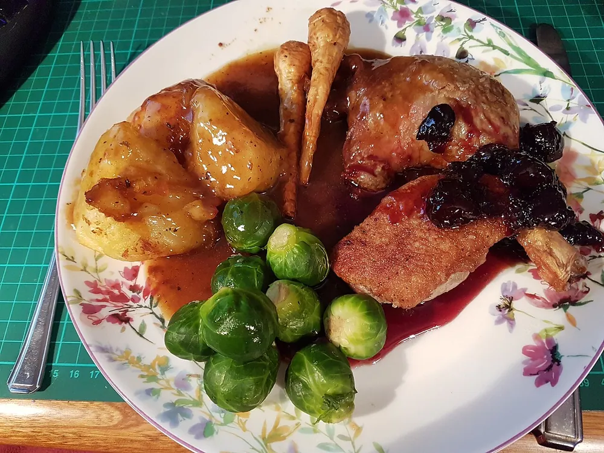

Gastronomique Française
Magret de canard sauce aux cerises
Par Blogueur B ·
★★★★★ 4,7 (9) · 2 commentaires
- Préparation
- 20 min
- Cuisson
- 25 min
- Total
- 45 min
- Portions
- 4 pers.
- Difficulté
- Moyen
- Coût
- €€€ (élevé)
Intro du blogueur
Un plat de fête : un magret à la peau croustillante et rosé à cœur, relevé d'une sauce aigre-douce aux cerises et au balsamique.
Ingrédients
Magret
Sauce
Accompagnement
Préparation
-
Préparer les magrets
Quadrillez la peau au couteau sans toucher la chair, puis salez et poivrez.
-
Cuire côté peau
Posez les magrets côté peau dans une poêle froide, à feu moyen, 8 à 10 minutes jusqu'à ce que la peau soit dorée. Versez la graisse au fur et à mesure.
-
Retourner et reposer
Retournez les magrets 4 minutes, puis laissez-les reposer 10 minutes sous une feuille d'aluminium.
-
Faire la sauce
Dans la même poêle, faites suer les échalotes, déglacez au balsamique, ajoutez les cerises et le fond de veau. Laissez réduire 8 minutes, puis montez au beurre froid.
-
Cuire les pommes de terre
Faites-les cuire 15 minutes à l'eau, puis rissolez-les dans un peu de graisse de canard et parsemez de persil.
-
Dresser
Tranchez les magrets en biais et nappez de sauce.
Astuces et variantes
Démarrer à froid, côté peau, fait fondre la graisse sans brûler la peau. En hiver, les cerises surgelées donnent le même résultat.
Vous l'avez testée ? Notez-la
Moyenne 4,7 / 5 sur 9 notes · Connectez-vous pour noter
Commentaires (2)
Membre_1
A testé la recettePeau croustillante, sauce parfaite. Un plat de restaurant.
Membre_4
Excellent, mais la réduction de la sauce demande un peu de patience.